Students at Makerere University Business School organised a fundraising car wash that raised more than one million shillings and supported food packs for 200 students.
Read more: At Makerere Business School (MUBS), a Car Wash Fed 200 Students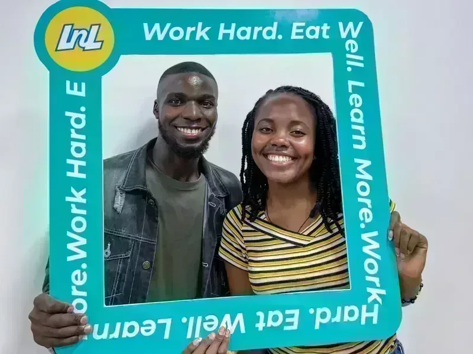
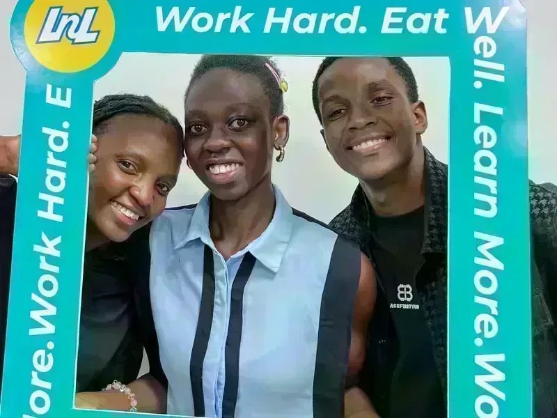
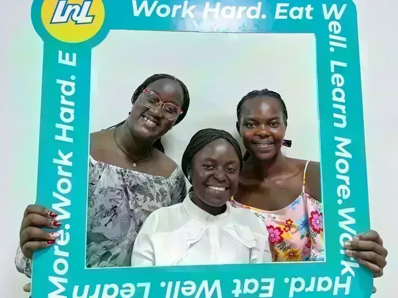
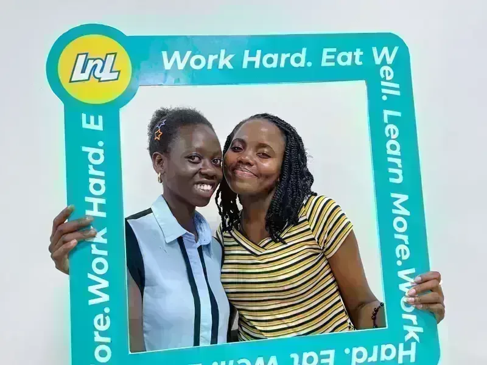
Food security is essential to student wellbeing and educational success. Learn And Lunch works with students, universities and partners to understand campus food insecurity, implement practical solutions and strengthen the systems that make food-secure higher education possible.
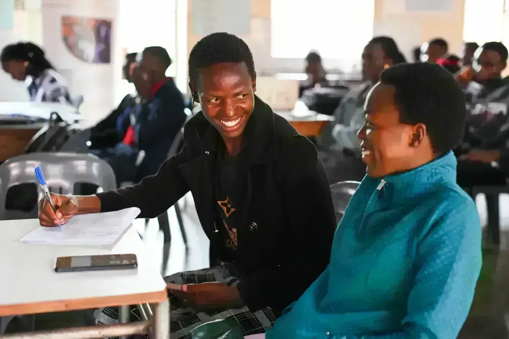
Learn And Lunch is a student-led organisation advancing food security in higher education. We combine research, practical implementation, student leadership and institutional partnerships to address campus food insecurity and help universities build food-secure learning environments.
Learn More About Us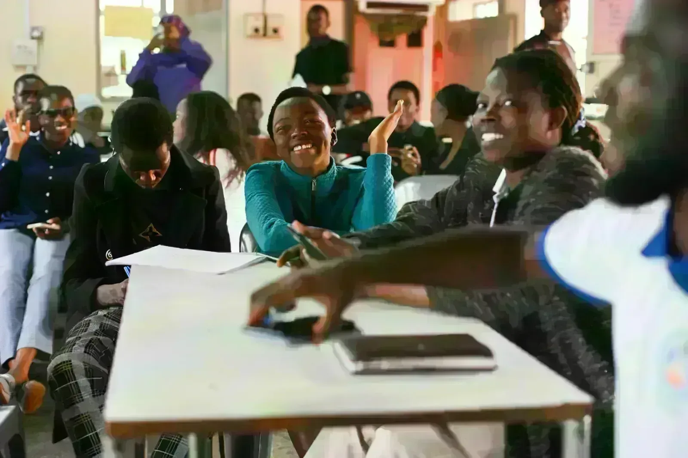
We generate evidence about student food insecurity, food access, affordability and campus food environments to inform practical responses and institutional decisions.
We work through student associations, guilds and campus networks so students can shape solutions and strengthen food security action within their institutions.
We design, implement and test practical approaches to improve student access to adequate, nutritious and affordable food, including meal access, nutrition education and campus food initiatives.
We work with universities and partners to develop the structures, policies, programmes and capacity needed to make food security part of higher education.
We bring together universities, students, researchers, food-system actors and development partners to build shared responses to campus food insecurity.
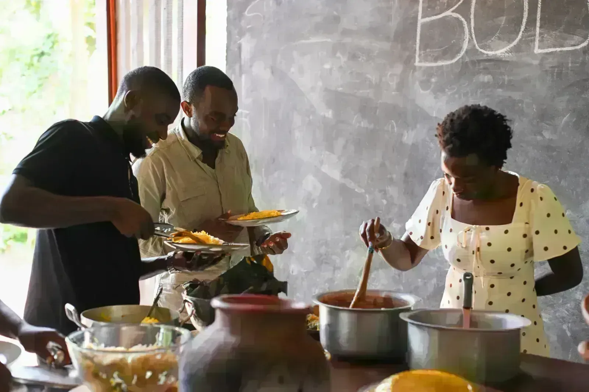
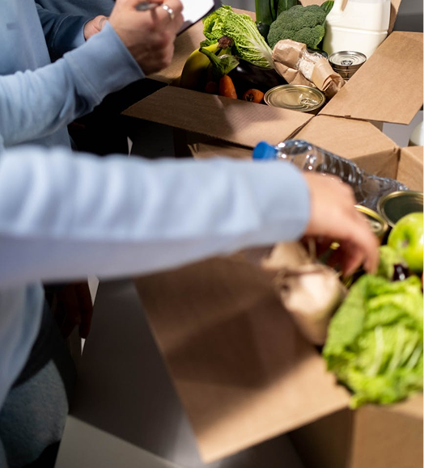
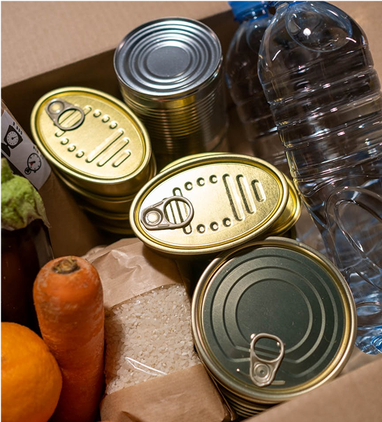
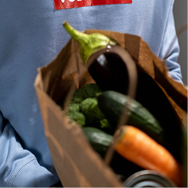
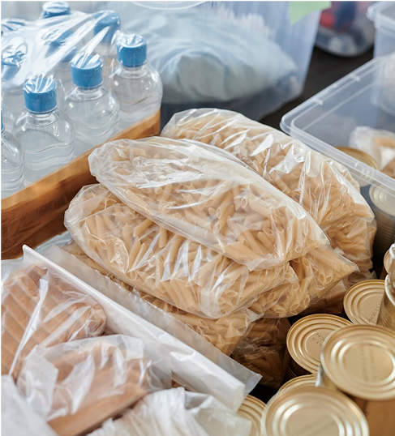
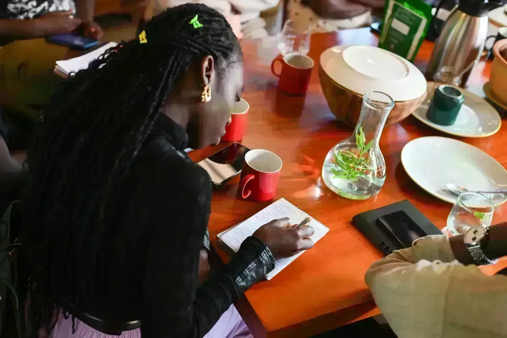
Explore student experiences, research, programme updates and partnerships shaping the response to campus food insecurity.
Students at Makerere University Business School organised a fundraising car wash that raised more than one million shillings and supported food packs for 200 students.
Read more: At Makerere Business School (MUBS), a Car Wash Fed 200 Students
The Campus Food Security Summit brought together 337 participants from 25 universities to discuss practical approaches to building food-secure universities.
Read more: 337 Students. 25 Universities. One Mission: Ending Campus Hunger.
Explore how the hidden costs of university life can affect students’ ability to access food and participate fully in higher education.
Read more: THE PRICE OF STUDYING: THE HIDDEN COSTS OF UNIVERSITY LIFE IN UGANDAFood insecurity affects students differently. A gender-responsive approach helps universities and partners develop more inclusive solutions.
Read more: Food Security Through a Gender Lens: Building Inclusive Universities in UgandaWe work with university communities, student networks, researchers and organisations to develop practical and institutional responses to campus food insecurity.